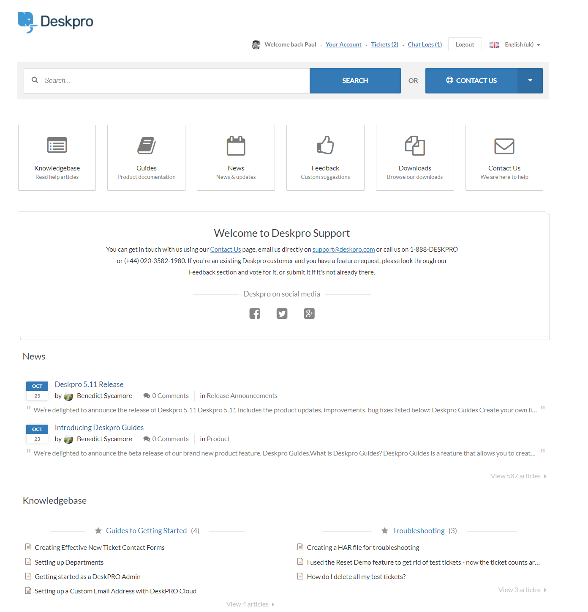
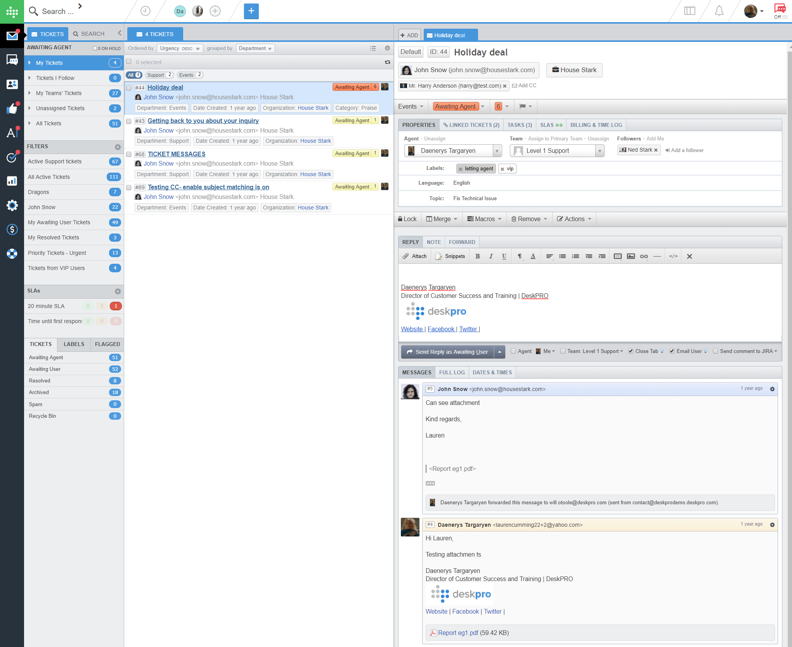
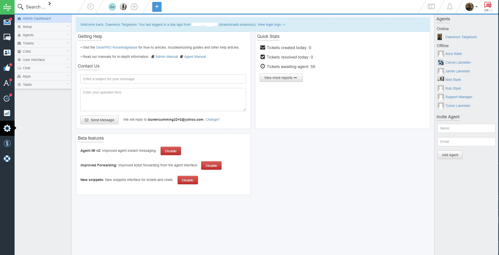
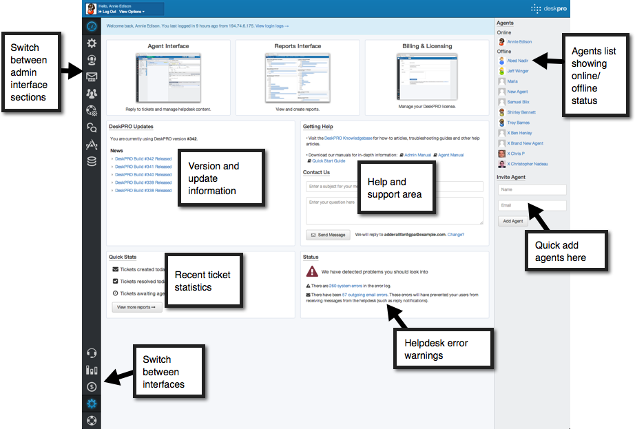
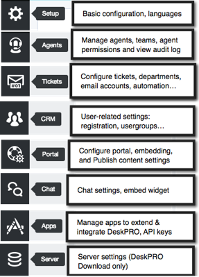
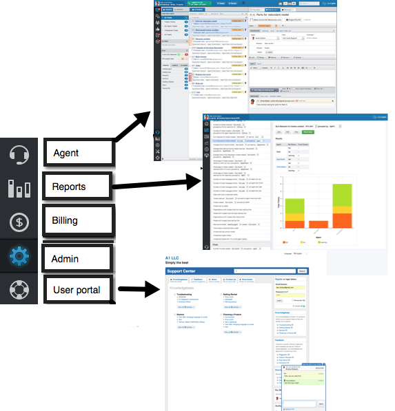

Admin guide
This book is distributed under a Creative Commons Attribution-NonCommercial-ShareAlike 3.0 license. That means:
You are free:
Welcome to Deskpro, the helpdesk software platform.
This manual explains the details of installing, configuring and managing a Deskpro helpdesk as an Administrator.
For a quick overview of how to get a Deskpro helpdesk up and running, see the Launching Your Helpdesk.
There are separate manuals for some advanced Admin topics:
If you run into a problem or a configuration challenge that’s not covered in this manual, it’s worth searching the Deskpro Knowledgebase.
We’ve worked hard to make Deskpro powerful, yet simple. We understand that to be accepted by your Agents, our software has to be intuitive and pleasant to use, but powerful enough that it enhances their productivity rather than holding them back.
We’ve carried the principle of “powerful, yet simple” through to the administration of the platform. You can set up a working Deskpro helpdesk in minutes, but the platform is flexible enough so you can configure it to match your business processes instead of changing the way you work.
Here are some of the key benefits of Deskpro:
Flexible configuration: You can organize your helpdesk using Teams and Departments to reflect how your business processes work. You can add extra information to Tickets to make sure that all the information that you need is captured, and use fine-grained access permissions to control what Agents and Users can see.
Scalability: Major enterprises have used Deskpro to handle millions of Tickets in a single helpdesk.
Multi-channel communication: With Deskpro, Users can communicate with your helpdesk in a variety of ways: email, our high-quality integrated Live Chat, through the Deskpro web Portal or through our Widgets that you can embed in your website. It’s up to you which channels you offer to which of your Users.
User history at a glance: You can see all the communication between your helpdesk and each User at a glance, for all Agents and channels.
Integrated publishing: Your web Portal contains a Knowledgebase which allows your Agents to create and manage articles offering solutions to common problems. The Knowledgebase can be used to deflect Tickets before they’re submitted, by showing relevant help content as the user describes their problem. The Portal can also host file Downloads and News Articles, all created and managed from within Deskpro.
Automation: Deskpro has a range of powerful, automatic actions, which you can set up with a simple web interface. This means that your helpdesk can handle repetitive or routine tasks, freeing up your Agents to be be more productive. You can automate your business processes using the same system. Agents can speed up their own workflow by creating and sharing time-saving Macros, Snippets and Custom Filters.
Powerful reporting: Detailed information about helpdesk performance is provided by the powerful Reports interface and built-in User Satisfaction Survey. Create your own custom Reports, that show the exact performance indicators that you want to track.
Branding: You can fully customize the web Portal and embed it into your website, or integrate Deskpro features like live Chat and Ticket submission forms into your website.
Extensibility: We refer to Deskpro as a platform because it can be extended using Deskpro apps. We offer pre-made apps to integrate your helpdesk with third-party services, and to enable Single Sign-On. You can customize the Agent interface by writing simple Widgets using just HTML and Javascript, or write your own full Apps. Deskpro has a full REST API to enable you to access helpdesk data and actions.
Truly multi-lingual: We’ve designed Deskpro with international usage in mind. You can quickly install new language packs to offer a translated user experience for most major languages. If you need a language that we don’t yet offer, we have a crowdsourcing translation system so you can provide or commission a new language pack.
Simple pricing structure: We don’t lock useful features until you upgrade to a more expensive pricing plan. You just pay a simple per-Agent fee and get access to all the power of the Deskpro platform.
Here are a few key terms and concepts we’ll be using throughout this manual.
Every issue (like a complaint or question) becomes a Ticket in Deskpro; a Ticket gives you a unified view of all the communication about an issue.
People who need help and support from your helpdesk, whether that is external customers or co-workers who need help (for example, if you’re running an IT helpdesk). Every Ticket belongs to a user.
Someone within your enterprise who uses Deskpro to help users, such as an IT support worker or customer service Agent.
An Admin is an Agent who can configure the helpdesk by accessing the Deskpro Admin interface.
Departments are a way to divide up the helpdesk and control access. They are typically used to reflect the internal organization of your enterprise e.g. you could have Sales, Support and Research departments. Every Ticket always has a Department.
Organizations can be used to record the company (or other enterprise) to which each User belongs.
This is a web interface for users to interact with the helpdesk; depending on how you choose to configure it, Users can view their Tickets, submit Feedback, see Knowledgebase Articles, etc. If enabled, it will be accessible to Users at the base URL of your helpdesk e.g. http://yourcompany.deskpro.com/ or http://helpdesk.yourcompany.com.

The Deskpro interface that your Agents use to respond to Tickets. When you have set up your helpdesk, it will be at http://yourcompany.deskpro.com/agent/ (whereyourcompany.deskpro.com is the URL of your helpdesk).

The Deskpro interface that you will use to configure and maintain the helpdesk. It will be at http://yourcompany.deskpro.com/admin /.

Once your helpdesk has been created, you will be able to log in to the Admin interface.
The Admin home page gives you an overview of the status of your Deskpro installation.

You can access different sections of the Admin interface using the upper icons in the bar at far left.

You can switch between interfaces (including the web portal for Users) with the icons at the lower left.

Note that as an Admin, you can log into any of these interfaces using your account.